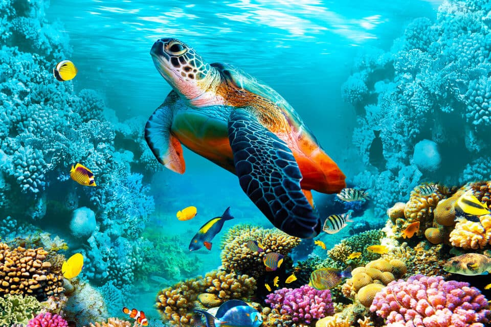
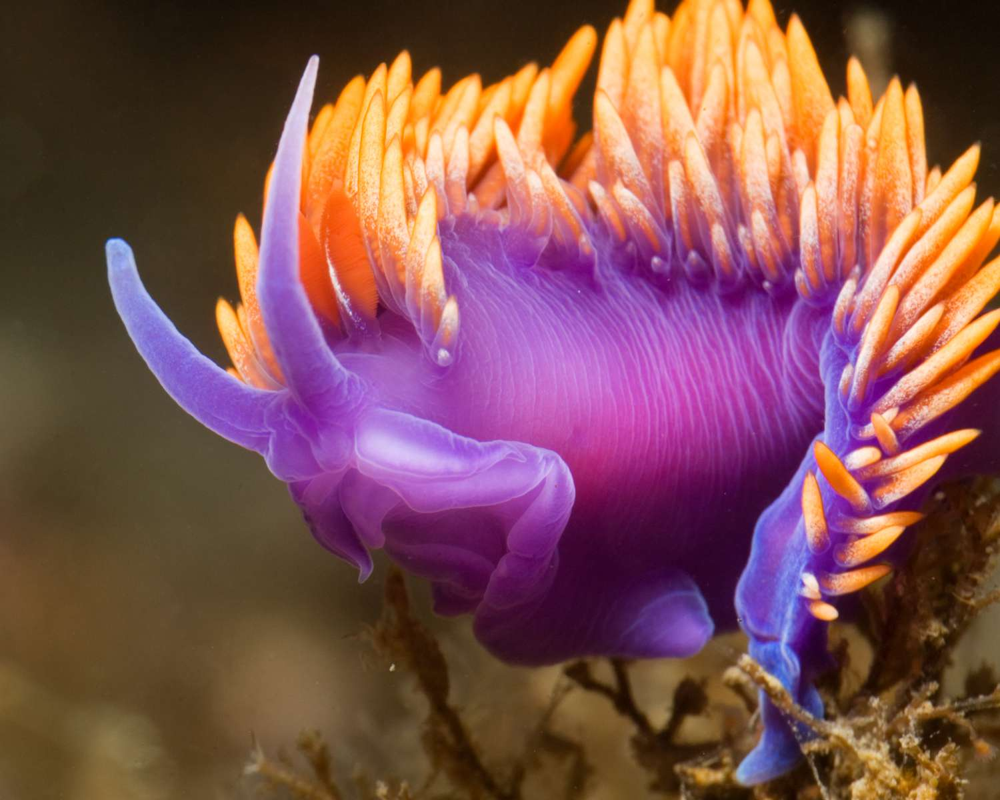

The giant Pacific octopus grows bigger and lives longer than any other octopus species. The size record is held by a specimen that was 30 feet across and weighed more than 600 pounds. Averages are more like 16 feet and 110 lbs.
Life Cycle
They live to be about four years old, with both males and females dying soon after breeding. Females live long enough to tend fastidiously to their eggs, but they do not eat during this months-long brooding period, and usually die soon afterwards.
Camouflage
Giant Pacific octopuses have huge, bulbous heads and are generally reddish-brown in color. Like the other members of the octopus family, though, they use special pigment cells in their skin to change colors and textures, and can blend in with even the most intricately patterned corals, plants, and rocks.
Diet and Range
They hunt at night, surviving primarily on shrimp, clams, lobsters, and fish, but have been known to attack and eat sharks as well as birds, using their sharp, beaklike mouths to puncture and tear flesh. They range throughout the temperate waters of the Pacific, from southern California to Alaska, west to the Aleutian Islands and Japan.
Diet and Range
Highly intelligent creatures, giant Pacific octopuses have learned to open jars, mimic other octopuses, and solve mazes in lab tests. Their population numbers are unknown, and they do not currently appear on any lists of endangered or vulnerable animals. However, they are sensitive to environmental conditions and may be suffering from high pollution levels in their range.
Sea Turtles

Seven different species of sea (or marine) turtles grace our ocean waters, from the shallow seagrass beds of the Indian Ocean, to the colorful reefs of the Coral Triangle and the sandy beaches of the Eastern Pacific. While these highly migratory species periodically come ashore to either bask or nest, sea turtles spend the bulk of their lives in the ocean. WWF's work on sea turtles focuses on five of those species: green, hawksbill, loggerhead, leatherback, and olive ridley.
Over the last 200 years, human activities have tipped the scales against the survival of these ancient mariners. Slaughtered for their eggs, meat, skin, and shells, sea turtles suffer from poaching and over-exploitation. They also face habitat destruction and accidental capture—known as bycatch—in fishing gear. Climate change has an impact on turtle nesting sites; it alters sand temperatures, which then affects the sex of hatchlings. Nearly all species of sea turtle are now classified as endangered, with three of the seven existing species being critically endangered.
WWF is committed to stopping the decline of sea turtles and works for the recovery of the species. We work to secure environments in which both turtles and the people that depend upon them can survive.
Sea turtles journey between land and sea and swim thousands of ocean miles during their long lifetimes. They wait decades until they can reproduce, returning to the same beaches where they were born to lay their eggs. Females can lay hundreds of eggs in one nesting season, yet few will yield hatchlings that survive their first year of life. Beyond these significant natural challenges, sea turtles face multiple threats caused by humans, such as bycatch in commercial fishing gear, illegal trade, consumption, and climate change.
Overharvesting and Illegal Trade
Sea turtles continue to be harvested unsustainably both for human consumption and trade of their parts. Turtle meat and eggs are a source of food and income for many people around the world. Some also kill turtles for medicine and religious ceremonies. Tens of thousands of sea turtles are lost this way every year, devastating populations of already endangered greens and hawksbills.
Killing of turtles for both domestic and international markets continues as well. International trade in all sea turtle species and their parts is prohibited under the Convention on International Trade in Endangered Species of Wild Fauna and Flora (CITES), a global agreement among governments to regulate or ban international trade in species under threat. Still, illegal trafficking persists
Habitat Loss
Sea turtles are dependent on beaches for nesting. Uncontrolled coastal development, vehicle traffic on beaches, and other human activities have directly destroyed or disturbed sea turtle nesting beaches around the world. For example, lights from roads and buildings disorient hatchlings away from the sea, and vehicle traffic on beaches compacts the sand, making it impossible for female turtles to dig nests. Turtle feeding grounds such as coral reefs and seagrass beds are damaged and destroyed by activities onshore, including sedimentation from clearing of land and nutrient run-off from agriculture. Beach restoration projects for protecting seaside buildings have also been found to be harmful, through dredging and sand filling.
Blue Whale
Blue whales are the largest animals ever known to have lived on Earth. These magnificent marine mammals rule the oceans at up to 100 feet long and upwards of 200 tons. Their tongues alone can weigh as much as an elephant. Their hearts, as much as an automobile.
Diet of krill
Blue whales reach these mind-boggling dimensions on a diet composed nearly exclusively of tiny shrimplike animals called krill. During certain times of the year, a single adult blue whale consumes about 4 tons of krill a day.
Blue whales are baleen whales, which means they have fringed plates of fingernail-like material, called baleen, attached to their upper jaws. The giant animals feed by first gulping an enormous mouthful of water, expanding the pleated skin on their throat and belly to take it in. Then the whale's massive tongue forces the water out through the thin, overlapping baleen plates. Thousands of krill are left behind—and then swallowed.
Coloring and appearance
Blue whales look true blue underwater, but on the surface their coloring is more a mottled blue-gray. Their underbellies take on a yellowish hue from the millions of microorganisms that take up residence in their skin. The blue whale has a broad, flat head and a long, tapered body that ends in wide, triangular flukes.
Vocalization and behavior
Blue whales live in all the world's oceans, except the Arctic, occasionally swimming in small groups but usually alone or in pairs. They often spend summers feeding in polar waters and undertake lengthy migrations towards the Equator as winter arrives.
These graceful swimmers cruise the ocean at more than five miles an hour, but accelerate to more than 20 miles an hour when they are agitated. Blue whales are among the loudest animals on the planet. They emit a series of pulses, groans, and moans, and it’s thought that, in good conditions, blue whales can hear each other up to 1,000 miles away. Scientists think they use these vocalizations not only to communicate, but, along with their excellent hearing, to sonar-navigate the lightless ocean depths.
Longevity
Blue whales are among Earth's longest-lived animals. Scientists have discovered that by counting the layers of a deceased whale's waxlike earplugs, they can get a close estimate of the animal's age. The oldest blue whale found using this method was determined to be around 110 years old. Average lifespan is estimated at around 80 to 90 years.
Conservation
Aggressive hunting in the 1900s by whalers seeking whale oil drove them to the brink of extinction. Between 1900 and the mid-1960s, some 360,000 blue whales were slaughtered. They finally came under protection with the 1966 International Whaling Commission, but they've managed only a minor recovery since then.
Blue whales have few predators but are known to fall victim to attacks by sharks and killer whales, and many are injured or die each year from impacts with large ships.
Nudibranchs

There are two distinct types of nudibranchs: aeolids and dorids. Aeolids absorb oxygen through their skin and have a series of horn-like projections, called cerata, on their heads and backs that allow them to take in more oxygen. Dorids, the most common type of nudibranch, breathe through a tuft of external feathery gills that they can retract into their body for protection if needed. Nudibranch gills come in many shapes and sizes and are used for breathing, digestion, and defence. While in other parts of the world the average length for nudibranchs is about two centimetres, British Columbia’s nudibranchs are giants by comparison, generally reaching 15 to 30 centimetres in length.
Cold water nudibranchs like those found in B.C. waters are no less exotic-looking than their riotously-coloured tropical counterparts. All nudibranchs derive their colouring from the food they eat and the terrain they inhabit. Because they lack an outer protective shell, nudibranchs have evolved several different ways of defending themselves. Some employ camouflage to blend in with their surroundings, while others use their vibrant and contrasting colours to deter predators from devouring them. Many nudibranchs make themselves unpalatable to predators by absorbing foul-tasting toxins from sponges into their body tissues, and some even recycle stinging cells from sea anemones into the tips of their cerata.
Nudibranchs also soak up their prey’s pigment into their tissue, which allows them to be camouflaged while feeding atop the very animals they eat. Since nudibranchs are harmless to humans, people in Chile and some islanders in Alaska and Russia consider them a delicacy to be eaten either boiled, roasted, or raw. For the uninitiated, the experience is a bit like chewing a rubber pencil eraser.
Life on the seafloor
Nudibranchs are mostly found on the ocean floor. They move around by way of a broad, flat muscle on their underside called a foot. Some can even swim short distances in the water column by undulating their foot muscle. As you may have guessed from the section above, nudibranchs are omnivorous and have oral tentacles near their mouths which act like hands to help them poke around for grub. They possess a set of curved teeth called radula, which they use to munch on a wide variety of organisms including hydroids, seaweed, corals, algae, barnacles, fish eggs, sponges, anemones and even other nudibranchs. Some species are finicky eaters, consuming only one kind of prey.
Nudibranchs have poor vision and can only discern light and dark, so they must sense the world through two highly sensitive tentacles called rhinophores located on top of their heads. These rhinophores tend to stick out and serve as a nice lure for hungry fish; fortunately, most nudibranchs have the ability to completely withdraw their rhinophores into a receptacle in their skin whenever they sense danger.
Fascinatingly, nudibranchs are simultaneous hermaphrodites possessing the reproductive organs of both sexes, which allows them to mate with any other mature member of their species. Because they do not roam too far and have a short lifespan, ranging from one week to one year in the wild, survival of the species depends on their ability to mate whenever the opportunity presents itself. After a dance-like courtship, the mating ritual only takes a few minutes. Nudibranchs lay ribbon-like egg masses that hatch into free-swimming larvae, which eventually settle on the seafloor as adults.
Ocean health indicators
Scientists are keenly interested in nudibranchs for two reasons. One is they believe the chemicals these animals store could be used to develop new medicines for use in humans. One compound stored by nudibranchs called Latrunculin A is the subject of ongoing research to develop new treatments for cancer and neurodegenerative diseases.